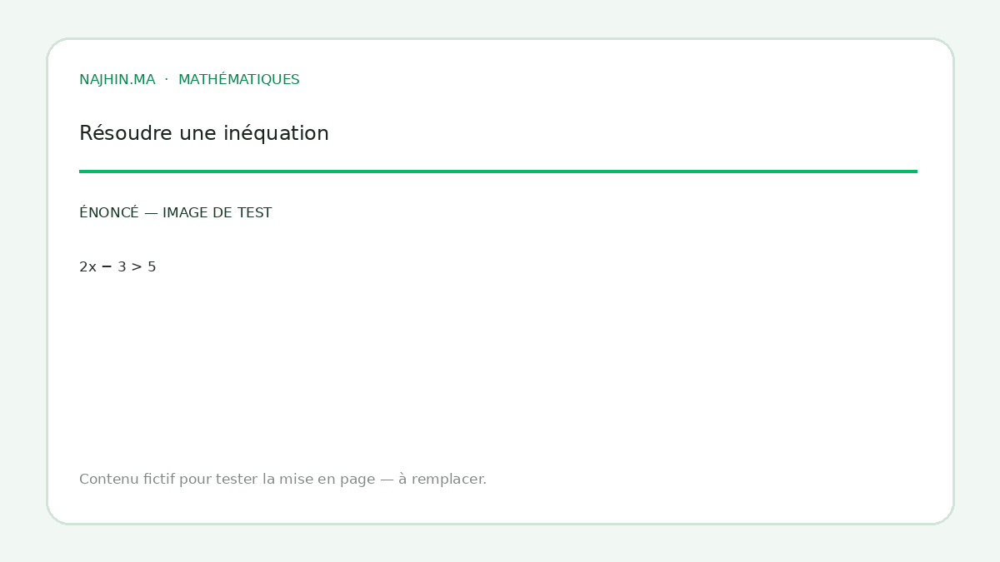
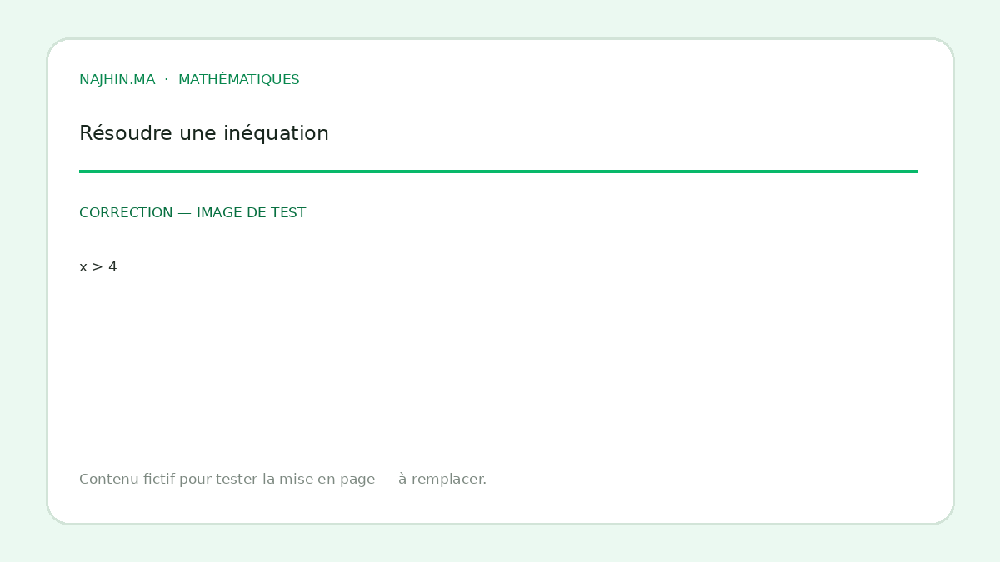

najhin
.ma
Accueil
Tronc Commun
1ère Bac
2ème Bac
Devoirs
Examens
☾
☰
Accueil
Tronc Commun
1ère Bac
2ème Bac
Devoirs
Examens
Accueil
/
Inéquations et Équations
/ Résoudre une inéquation
EXERCICE CORRIGÉ · Tronc Commun
Résoudre une inéquation
Inéquations et Équations
·
Tronc Commun
· Facile
Exercice fictif de démonstration. Il sert à tester l'affichage des énoncés, images, PDF et corrections.
Énoncé
2x − 3 > 5

Ouvrir l'énoncé PDF
Correction détaillée

Correction proposée
x > 4
Afficher la correction
Correction PDF
Marquer comme terminé ✓
Retour au chapitre